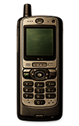
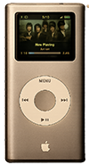
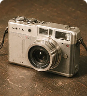
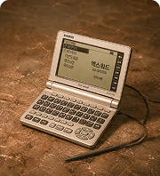

휴대폰
2000년대


새로운 기술이 일상을 빠르게 바꾸던 2000년대
인터넷과 휴대폰이 대중화되며 사람들의 소통방식과
생활방식이 크게 변화했습니다. 기억하고 싶은
2000년대의 추억을 디지털 아카이브로 기록합니다.

언제 어디서나
연결된 소통의 시작

음악을 내 손안에,
나만의 플레이리스트

일상을 기록하는
새로운 방법
2000년대

2000년대

2000년대

2000 년대


 1990
2010
1990
2010

2000 ARCHIVE
2000년대
2000년대 휴대폰은 통화뿐만 아니라 문자와 사진 촬영 등 다양한 기능을 제공하며 일상 속 필수 기기로 자리 잡았습니다. 개성을 표현하는 벨소리와 배경화면 문화도 함께 유행했습니다.

문자메시지
짧은 문자로 일상을 주고받던 대표적인 소통 방식

사진 촬영
일상의 순간을 휴대폰으로 간편하게 기록하던 문화

벨소리
다양한 벨소리로 자신만의 개성을 표현하던 문화

2000 ARCHIVE
2000년대
2000년대 MP3 플레이어는 수백 곡의 음악을 작은 기기에 담아 언제 어디서나 감상할 수 있게 해준 디지털 음악기기였습니다. CD 없이도 다양한 음악을 휴대하는 새로운 문화를 만들었습니다

간편한 재생
원하는 음악을 손쉽게 선택해 감상할 수 있었던 기기

대용량 저장
좋아하는 음악을 저장해 언제든 들을 수 있었던 문화

디지털 음악
수백 곡의 음악을 한 기기에 담아 감상하던 방식

2000 ARCHIVE
2000년대
2000년대 디지털 카메라는 필름 없이 사진을 찍고 바로 확인할 수 있게 해준 대표적인 기록 도구였습니다. 여행과 학교, 일상의 순간을 손쉽게 남기며 새로운 사진 문화를 만들었습니다.

메인사진 촬영
서브 일상의 순간을 간편하게 기록하던 디지털 카메라

메인 바로 확인
서브 촬영한 사진을 즉시 확인할 수 있었던 방식

메인메모리 저장
서브 수많은 사진을 메모리카드에 보관하던 문화

2000 ARCHIVE
2000년대
2000년대 전자사전은 단어 검색부터 예문과 발음까지 확인할 수 있는 학습 기기였습니다. 학생들의 필수품으로 자리 잡으며 학교와 학원에서 널리 사용되었습니다.

단어 검색
궁금한 단어의 뜻을 빠르게 찾아보던 학습 방식

발음 듣기
원어민 발음을 들으며 학습할 수 있었던 기능

학습 도구
학교와 학원에서 함께하던 대표적인 학습 기기